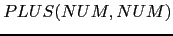
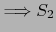
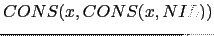
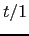
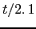
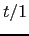
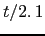
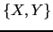
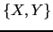
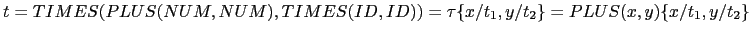

Sig: Ejemplo de Transformaciones Árbol: Sup: Transformaciones Árbol Ant: Selección de Código y Con:
En su forma mas sencilla, estas reglas de transformación
vienen definidas
por ternas
 , donde la primera componente de la
terna
, donde la primera componente de la
terna  es un patrón árbol que dice que árboles
deben ser seleccionados. La segunda componente
es un patrón árbol que dice que árboles
deben ser seleccionados. La segunda componente
 dice cómo debe transformarse el árbol que casa con el patrón
dice cómo debe transformarse el árbol que casa con el patrón
 . La acción
. La acción  indica como deben
computarse los atributos del árbol transformado
a partir de los atributos
del árbol que casa con el patrón
indica como deben
computarse los atributos del árbol transformado
a partir de los atributos
del árbol que casa con el patrón  .
Una forma de representar este esquema sería:
.
Una forma de representar este esquema sería:
{ action }
Por ejemplo:

{ $NUM_3{VAL} = $NUM_1{VAL} + $NUM_2{VAL} }
cuyo significado es que dondequiera que haya un nódo del AAA que case
con el patrón de entrada
 deberá sustituirse
el subárbol
por el subárbol  . Al igual que en los
esquemas de traducción, enumeramos las apariciones de los símbolos,
para distinguirlos en la parte semántica. La acción indica
como deben recomputarse los atributos para el nuevo árbol:
El atributo
. Al igual que en los
esquemas de traducción, enumeramos las apariciones de los símbolos,
para distinguirlos en la parte semántica. La acción indica
como deben recomputarse los atributos para el nuevo árbol:
El atributo VAL del árbol resultante es la suma de los atributos
VAL de los operandos en el árbol que ha casado.
La transformación se repite hasta que se produce la normalización del árbol.
Las reglas de ``casamiento'' de árboles pueden ser mas complejas, haciendo alusión a propiedades de los atributos, por ejemplo
{ notlive($LEFTVALUE{VAL}) }
indica que se pueden eliminar aquellos árboles de tipo asignación
en los cuáles la variable asociada con el nodo  no se usa posteriormente.
no se usa posteriormente.
Otros ejemplos con variables  y
y  :
:
{ $NUM{VAL} != 0 }
{ $NUM{VAL} == 0 }

Observe que en el patrón de entrada
aparece un
``comodín'': la variable-árbol  , que hace que el árbol
patrón
case con cualquier árbol de asignación,
independientemente de la forma que tenga su subárbol derecho.
, que hace que el árbol
patrón
case con cualquier árbol de asignación,
independientemente de la forma que tenga su subárbol derecho.
Las siguientes definiciones formalizan una aproximación simplificada al significado de los conceptos patrones árbol y casamiento de árboles.
El patrón
 es un ejemplo de patrón no lineal.
La idea es que un patrón lineal como éste ``fuerza'' a que los árboles  que casen con el patrón deben tener iguales los dos correspondientes
subárboles  y
 situados en las posiciones de las variables
7.1
que casen con el patrón deben tener iguales los dos correspondientes
subárboles  y
 situados en las posiciones de las variables
7.1
la cuál genera los árboles concretos para la gramática
¿Es
 un patrón árbol sobre el conjunto de variables ?
¿Lo es
un patrón árbol sobre el conjunto de variables ?
¿Lo es
 ? ¿Es
? ¿Es
 un patrón árbol?
un patrón árbol?
![[*]](crossref.png) para el lenguaje Tutu son:
para el lenguaje Tutu son:
considerando el conjunto de variables
 . El patrón
. El patrón
 es del tipo
es del tipo  .
.
Tal función puede ser naturalmente extendida de las variables a los árboles: los nodos (hoja) etiquetados con dichas variables son sustituidos por los correspondientes subárboles.
|
|
 |
Obsérvese que, al revés de lo que es costumbre, la aplicación
de la sustitución al patrón se escribe por detrás:  .
.
También se escribe
 si las variables
que aparecen en
si las variables
que aparecen en  de izquierda a derecha son
de izquierda a derecha son
 .
.
Por ejemplo es obvio que para el árbol raíz
 no existe sustitución
posible:
no existe sustitución
posible:

ya que un término con raíz  nunca podrá ser igual a un término con raíz
nunca podrá ser igual a un término con raíz
 .
.
El problema aquí es equivalente al de las expresiones regulares en el caso de los lenguajes lineales. En aquellos, los autómatas finitos nos proveen con un mecanismo para reconocer si una determinada cadena ``casa''' o no con la expresión regular. Existe un concepto análogo, el de autómata árbol que resuelve el problema del ``casamiento'' de patrones árbol. Al igual que el concepto de autómata permite la construcción de software para la búsqueda de cadenas y su posterior modificación, el concepto de autómata árbol permite la construcción de software para la búsqueda de los subárboles que casan con un patrón árbol dado.
Casiano Rodríguez León